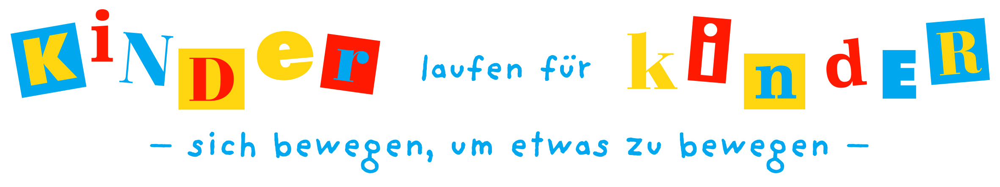

Wie
funktioniert
Kinder
laufen für
Kinder?

Lauf eintragen und Urkunde sichern
Oder spenden Sie so!
Schulstiftung Seligenthal; Sonderkonto „Kinder laufen für Kinder“
Sparkasse Landshut; BIC: BYLADEM1LAH
IBAN: DE09743500000004664205
Verwendungszweck: Spende von ... für virtuellen Spendenlauf
Für einen Betrag von weniger als 200€ gilt der Überweisungsträger als Spendennachweis.
Wird bei einem größeren Spendenbetrag eine Spendenquittung benötigt,
dann wenden Sie sich bitte an
badminton@postsportverein-landshut.de
Wo kommen die Spenden an?
Kinderpalliativ Hilfe Niederbayern https://www.kinderpalliativ-niederbayern.de/
Der Verein unterstütze mittlerweile nicht nur unheilbar sterbende, sondern auch schwerstkranke Kinder. Diese sollen
zu Hause in gewohnter Umgebung sterben dürfen. Im besten Falle werden die Kinder im Kreis der Familie gepflegt.
Der Verein fördert Maßnahmen und Einrichtungen, die die Situation betroffener Familien verbessern.
Kinderheim St. Vinzenz https://caritaslandshut.de/kinderheim
Ausgleich von sozialer Benachteiligung - Aufrechterhaltung von sozialen Bindungen - Weiterführende
heilpädagogische Maßnahmen.
Kinderkrankenhaus St. Marien in Landshut https://www.kinderkrankenhaus-landshut.de/
das Kinderkrankenhaus in seiner vielfältigen und überregionalen Aufgaben zu unterstützen umso den vom
Kinderkrankenhaus betreuten Kindern, die bestmögliche Behandlung und Betreuung zukommen zu lassen.
Klinikclowns https://www.klinikclowns.de/
Nach dem Motto „Lachen ist die beste Medizin“ erleichtern die regelmäßigen Besuche der Klinikclowns kranken
Kindern die oft schwere, von Sorgen geprägte Zeit eines Klinikaufenthalts und fördern den Heilungsprozess.
„Landshuter für Landshut“ OB Direkthilfe Landshut
Die OB-Direkthilfe-Aktion „Landshuter für Landshuter“ hat sich zum Ziel gesetzt Familien oder Einzelpersonen aus
der Stadt Landshut, die mit einem Schicksalsschlag zu kämpfen haben und dringender Hilfe bedürfen, zu
unterstützen.
Stille Hilfe – Landkreis Landshut - http://www.stille-hilfe.de/
Im Moment scheint das Leben perfekt und plötzlich ist alles anders. Schicksale, wie eine heimtückische Krankheit,
ein Unfall, die Gewalt der Natur usw. entscheiden oft über Glück oder Unglück. Hier nimmt sich der Verein "Stille
Hilfe e.V." unverschuldet in Not geratener Menschen aus der Region an.